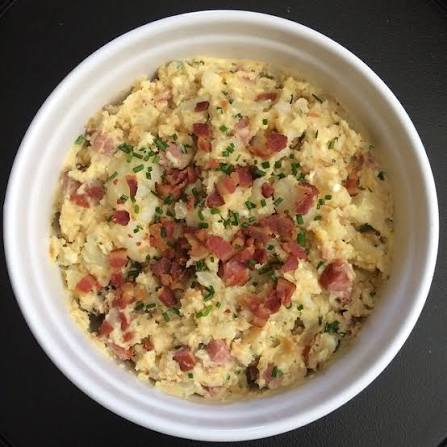

This Japanese potato salad is a creamy-chunky potato salad with bites of ham and crunchy carrot and cucumber bits and a rice vinegar-Japanese mayo dressing. It's tangy and lightly sweet, with a wonderful texture.
Cover egg with 1 inch of water in a small saucepan. Bring to a full rolling boil. Cover, remove from heat, and let stand 15 minutes; drain. Transfer egg to a bowl of ice water until cool enough to handle, about 5 minutes. Peel and coarsely chop.
Meanwhile, cook potatoes in enough boiling salted water to cover in a medium saucepan over medium heat until tender, 15 to 20 minutes; drain. Return potatoes to the saucepan.
Sprinkle potatoes with vinegar, sugar, 1/2 teaspoon salt, and the pepper. Mash potatoes coarsely, leaving plenty of chunks (the potatoes will break down further as the salad is combined, so don’t overdo it). Transfer potatoes to a large bowl and spread in an even layer up the sides of the bowl so they can cool quickly, about 30 minutes.
Meanwhile, thinly slice the cucumber using a mandoline. You should have 1 1/4 to 1 1/2 cups.
Place cucumber in a colander set in the sink. Sprinkle with 1/8 teaspoon salt; toss to combine.
Let stand 10 minutes. Place cucumber slices in a clean kitchen towel or paper towels; squeeze out excess water.
When potatoes are cooled, add egg, cucumber, ham, mayonnaise, carrot, green onions, and mustard. Fold to combine. Cover and refrigerate 30 minutes before serving.